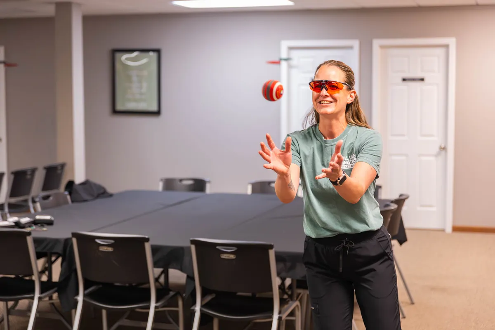

A gentle, whole-person look at symptoms that start in the brain and nervous system, like brain fog, loss of memory, dizziness or trouble with speech.
Functional neurology is a holistic approach to symptoms of the brain and nervous system. We examine how your brain is working to see which side isn't functioning at its best, then use a safe, gentle approach to help it reconnect so it can work at its best level of wellness.
If you've been living with brain fog, memory trouble or dizziness and nobody has been able to tell you why, we'd like to talk with you. Here's what this care looks like and how it starts.
It's a way of looking at the brain and nervous system as a whole, rather than chasing one symptom at a time. We look at how your brain is working and which side isn't keeping up as well as it should. From there, care is gentle and aimed at helping the brain reconnect, so it can do its job the way it's meant to.
You might be a good fit if you struggle with any of these.
If any of those sound like you, we want to talk with you about the hope of finding relief.
We recommend starting with a full comprehensive exam. It helps us find the root of your symptoms before we suggest anything, and you'll hear what we found and what we recommend before you decide on care.
Brain-based and vestibular exercises are part of the care we offer at Living Well, along with Eyelights, light glasses used during brain-based exercises. Whether any of these fit you depends on what your exam shows.
Dr. Dale Capela is a chiropractor who also specializes in neurology. You can read more about him and the rest of our team on our Meet the Team page.
It isn't a replacement for your doctor, and we won't ask you to stop anything they've prescribed. It also isn't emergency care. Sudden dizziness, sudden trouble speaking, weakness on one side, or any new and severe symptom needs help right away, so call 911.
No surprises, and nothing you have not agreed to.
Your first visit starts with history and questions, before any plan is made.
A full comprehensive exam to look for the root of your symptoms, and whether this is something we can help with or something that belongs with another provider.
You hear what we found and what we would suggest before anything else happens.
We review how things are going with you along the way and adjust the plan as needed.
New patients are welcome. Come as you are, we will take it from there.
Tell us a good time and we'll call to confirm.